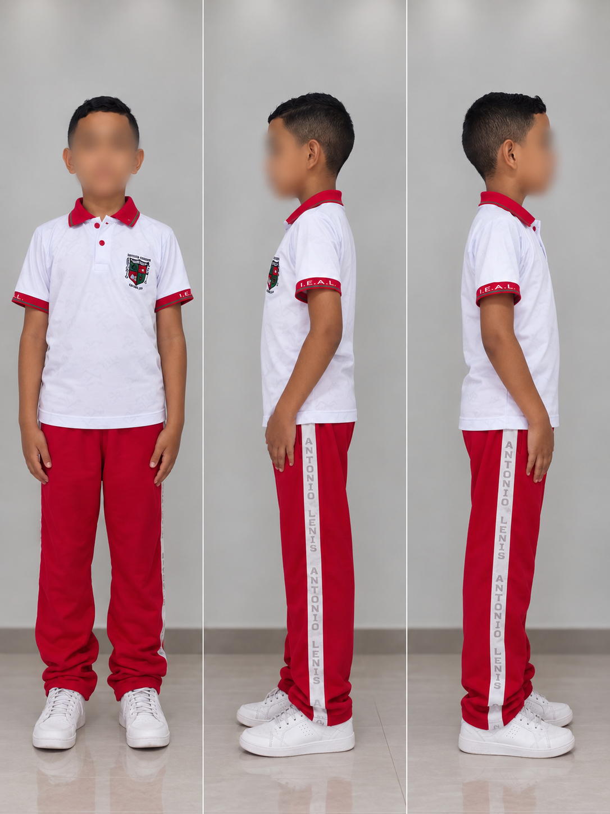
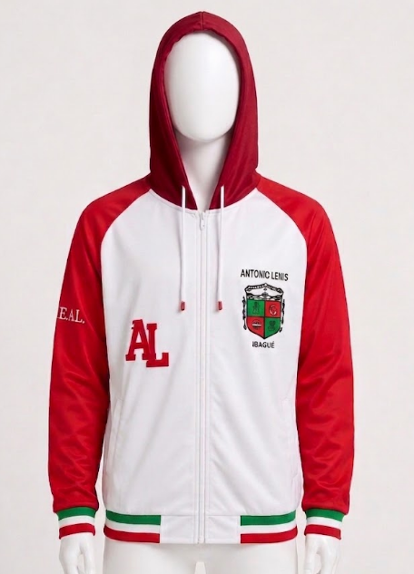

INSTITUCIÓN EDUCATIVA ANTONIO LENIS
Sede Principal
Código DANE
170001000180
Sede Carrenales
Código DANE
170001000210
Sede Mercedes Abrego
Código DANE
170001000341
Política de Calidad
La Institución Educativa Antonio Lenis, ente público, presta un servicio educativo en los niveles preescolar, básica primaria, básica secundaria y media académica con el apoyo y orientación de talento humano calificado y comprometido con el mejoramiento continuo de los procesos, respondiendo a las necesidades y expectativas de la comunidad educativa.
Símbolos Institucionales
La Institución Educativa Antonio Lenis cuenta con símbolos que representan su identidad, historia y valores.
Misión
Formar integralmente ciudadanos críticos, reflexivos y comprometidos con la transformación social, mediante una educación de calidad que promueva el desarrollo de competencias académicas, ciudadanas y laborales, en un ambiente de inclusión, respeto y participación comunitaria.
Visión
Para el 2030, la Institución Educativa Antonio Lenis será líder en la región por su excelencia académica, formación en valores ciudadanos y compromiso con el desarrollo sostenible, generando egresados capaces de transformar su entorno con ética, innovación y responsabilidad social.
Escudo
Bandera
HIMNO INSTITUCIONAL
Colegio Lenis centro formador
de juventudes con tesón
tu experiencia en la educación
la recebimos con honor.
Llevas el nombre de un gran educador
que a Sincelejo su talento dio
Antonio Lenis maestro de gran valor
con su experiencia la niñez guió.
Eres la voz de un pueblo luchador
que con esfuerzo has logrado encauzar
y la ignorancia has derrotado,
guardas la ciencia en tus claustros queridos
pues la enseñanza ha sido tu misión.
Compañero Lenista, adelante,
avancemos con fe y lealtad
demostremos que somos capaces,
de nuestras metas conquistar.
Victorioso será nuestro grito,
como emblema de libertad
debemos todos cantar este coro
la educación sea popular.
Perfil de los Actores
El educando, de nuestra institución OFICIAL: I.E. ANTONIO LENIS, MUNICIPIO DE SINCELEJO, DEPARTAMENTO DE SUCRE; en su proceso de formación, debe caracterizarse por los valores que fundamentan el sentido de ser del plantel, como una institución orientada al desarrollo integro e integral del educando, teniendo en cuenta los siguientes valores sociales: Identidad propia, buen ciudadano, disciplinado, ético, comunicativo, participativo, solidario, productivo, ambientalista y analítico.
Son educandos, comprometidos con la identidad de nuestra institución OFICIAL: I.E. ANTONIO LENIS, MUNICIPIO DE SINCELEJO, DEPARTAMENTO DE SUCRE; y cuyo compromiso de ejemplo en todo su proceder, a través del respeto, la disciplina, la dignidad, la amistad fraterna, la tolerancia, como ejes del desarrollo personal, social, espiritual e intelectual.
- ⮚ Líderes dinamizadores de la comunidad y comprometidos con su grupo social, buscando la cooperación, la concertación y el desarrollo de iniciativas.
- ⮚ Autónomos en el sentido intelectual y moral, capaces de auto educarse; de administrar su aprendizaje mediante el ejercicio responsable de la libertad, asumiendo las consecuencias de sus actos y sus decisiones, respondiendo a una madurez y formación de carácter.
- ⮚ Introspectivos: Íntegros al dirigir la mirada a su interior con lealtad y sinceridad para luego emplear ese autoconocimiento en beneficio y transformación de su entorno social.
- ⮚ Comunitarios: capaces de amar, compartir y de aceptar a sus pares y a los demás, construyendo una comunidad más amable mediante el ejercicio de la ciudadanía y la democracia.
- ⮚ Buscadores de la verdad, con miras a enriquecer su crecimiento integral, su auto superación de manera constante y su relación con el entorno y la comunidad.
- ⮚ Creativos, innovadores, investigativos y transformadores de su entorno.
- ⮚ El o La estudiante además de las anteriores, tendrán que ser un ejemplo valioso positivo e imperativo para su entorno social.
- ⮚ Únicos e irrepetibles y alejados de la imitación irracional, de las modas vacías e inmaduras y coherentes con su edad, su carácter, sus saberes y su madurez conceptual.
El personero o Personera, debe ser un(a) líder con gran calidad humana comprometido con el mejoramiento de la convivencia y calidad de vida de toda la comunidad educativa.
El docente de la Institución Educativa Antonio Lenis, debe ser:
- ⮚ Conocedor del modelo pedagógico institucional, fundamentos de las teorías de aprendizaje y enfoques pedagógicos pertinentes.
- ⮚ Especializado en la disciplina a su cargo.
- ⮚ Comprometido con la calidad de la enseñanza y la educación.
- ⮚ Amable en su trato y firme en sus convicciones y criterios.
- ⮚ Activo en la construcción y ejecución del proyecto educativo local e institucional.
- ⮚ Líder que eduque con su buen ejemplo, dando testimonio de autogestión, protagonismo, compromiso, laboriosidad, participación democrática y creatividad.
- ⮚ Gestor de cambios permanentes, innovador en su quehacer pedagógico.
- ⮚ Poseedor de un amplio sentido de pertenencia con la institución.
- ⮚ Amante y facilitador de la paz y la convivencia armoniosa.
- ⮚ Generador en los estudiantes del juicio, de actitudes del modelo y de desarrollo cognitivo.
El padre de familia de la Institución Educativa Antonio Lenis, debe ser una persona:
- ⮚ Conocedora de los proyectos educativos institucionales
- ⮚ Proveedora de los elementos necesarios para el buen desarrollo de las actividades académica de sus hijos
- ⮚ Facilitadora en los procesos de aprendizaje de sus hijos.
- ⮚ Formadora permanente de los más altos valores que exige la sociedad.
- ⮚ Comprometida con el desarrollo integral de su núcleo familiar.
- ⮚ Fomentadora y dinamizadora de las políticas y objetivos institucionales.
- ⮚ Con alto sentido de pertenencia con la institución, con espíritu de servicio y lealtad.
- ⮚ Participante, activa y visionaria en los distintos entes del gobierno escolar.
- ⮚ Respetuosa con los miembros de la comunidad educativa.
- ⮚ Amante de la paz y el progreso de su región.
- ⮚ Comprometida con la calidad de la enseñanza, la educación nacional y en particular de la institución.
El egresado de la Institución Educativa Antonio Lenis, debe ser una persona.
- ⮚ Respetuosa de los derechos humanos.
- ⮚ Restauradora y conservadora del medio ambiente.
- ⮚ Con altas capacidades analíticas, críticas, reflexivas, comunicativas, laborioso.
- ⮚ Con gran sentido de superación y progreso mediante el esfuerzo y el trabajo.
- ⮚ Amante y defensor de la cultura local, regional, nacional y universal.
- ⮚ Líder en la participación ciudadana en lo que tiene que ver con las decisiones políticas, económicas y sociales del país.
- ⮚ Gestora del desarrollo del núcleo familiar, comunidad y región.
- ⮚ Con gran sentido de pertenencia con la institución.
Inscripcion-Admisión-Matricula
Proceso de ingreso y admisión a la Institución Educativa Antonio Lenis.
Pasos para la Inscripción - Admisión
Puede entrar desde la página https://antoniolenis.edu.co/, o puede ir directamente a https://plana.a2hosted.com/preinscripcion
Diligenciar formulario
Diligenciar el formulario de inscripción con todos los datos solicitados
Cargar documentos
Cargar o subir los documentos solicitados en formato PDF. Como son:
Registro civil de nacimiento del aspirante (menores de 7 años)
Documento de identidad del estudiante (aspirante) (tarjeta de identidad para mayores de 7 años y cédula de ciudadanía para mayores de 18 años)
Documento de identificación para extranjeros (visa o cédula de extranjería o Permiso especial de permanencia para el sector educación, permiso especial de permanencia para la formación y reconociendo de aprendizajes previos, Tarjeta de movilidad fronteriza, permiso de protección especial (PPT))
Documento de identidad padre y/o madre
Documento de identidad acudiente si es diferente al padre y/o madre
Observador del estudiante o certificación de comportamiento y disciplina (Es opcional y no aplica para transición)
Informe o notas de los periodos académicos cursados a la fecha o el boletín final (no aplica transición)
Carnet de salud o certificado de afiliación a salud
Carnet de vacunación (solo para transición)
Documento de Crecimiento y desarrollo (solo para transición)
NOTA: La admisión es el proceso mediante el cual, la institución selecciona de la población estudiantil que solicita ingreso por traslado o inscripción para los diferentes grados, a quienes podrán ser matriculados. En ningún caso la admisión de estudiantes estará sujeta a consideraciones de etnia, filiación política, religión, sexo, condición social o económica sobre el aspirante.
Condiciones de Permanencia
1. Según el artículo 9 del Decreto No. 3788 de 1986, y el artículo 34 y 39 de la ley 1801 de 2016 o ley de convivencia ciudadana, se prohíbe el porte y el consumo de estupefacientes y sustancias psicotrópicas, así como el uso o porte indebido de armas u objetos intimidatorios. Después de dar cumplimiento al debido proceso y al Decreto No. 3788 de 1986, se excluirá del establecimiento a quien infrinja estas normas. Ver artículo 19 de ley 1098 de 2006. Y ver artículo 381 del código penal, si llegare a aplicar, para el suministro de sustancias a otros educandos o estudiantes.
2. Inasistencia habitual injustificada según Artículo 6, Decreto 1290 del 16 de mayo de 2009.
3. Cancelación voluntaria de la matrícula por mutuo acuerdo.
4. La inasistencia del padre o acudiente a tres (3) de las reuniones programadas por nuestra Institución educativa oficial, o cuando se requiera de su presencia según se establece en el contrato de matrícula. Y NO acuda, sin excusa o sin motivación real y coherente. Ver ley 2025 de 2020. Ver artículo 20 literal 1 de ley 1098 de 2006.
5. Falta de acompañamiento de los padres. Ver artículo 2.3.4.3. del decreto 1075 de 2015.
6. Perfil inadecuado del educando en el área disciplinaria o actitudinal, luego del acompañamiento de apoyo y concertación de compromisos, que incumpla reiteradamente.
7. Incumplimiento de los acuerdos pactados entre el educando, acudiente y nuestra Institución educativa oficial.
8. Incumplimiento reincidente de las normas establecidas en el presente Manual de Convivencia.
9. Cuando el educando, repruebe un año académico por segunda vez.
10. Cuando el educando, haya firmado acta de compromiso comportamental o por bajo rendimiento académico, durante dos años consecutivos incumpliendo, sus compromisos adquiridos.
11. Cualquier tipo de irrespeto verbal o físico, o amenazas o agresiones, de parte de los padres o acudientes del educando, familiares o y hasta tercer grado de consanguinidad o de cercanos, que obre en contra de la vida, la honra, el buen nombre, la dignidad humana, y la salud y la integridad personal de cualquier miembro de nuestra comunidad. Sin perjuicio de la denuncia penal, por el presunto delito de VIOLENCIA CONTRA SERVIDOR PÚBLICO: Código Penal. Artículo 429. Violencia contra servidor público. El que ejerza violencia contra servidor público, por razón de sus funciones o para obligarlo a ejecutar u omitir algún acto propio de su cargo o a realizar uno contrario a sus deberes oficiales, incurrirá en prisión de cuatro (4) a ocho (8) años.
12. Retiro voluntario por parte de la familia, presentando carta a rectoría especificando las causas del mismo; y obviamente garantizando el estar a paz y salvo, por todo concepto, con nuestra Institución educativa oficial.
13. No firmar la matrícula, dentro de las fechas estipuladas para tales fines, y con el lleno de los requisitos establecidos por nuestra institución OFICIAL: I.E. ANTONIO LENIS, MUNICIPIO DE SINCELEJO, DEPARTAMENTO DE SUCRE.
14. Cuando nuestra Institución educativa oficial, compruebe falsedad u omisión en la documentación presentada para el ingreso del educando, en su matrícula, se declara nula esa matrícula.
15. Cuando se ordene, la cancelación de la matrícula, por mandato del Consejo Directivo de nuestra Institución educativa oficial, previo cumplimiento del conducto regular y agotamiento del debido proceso.
16. Cuando los padres de familia y/o acudientes, que han firmado la matrícula; acuden en una ocasión o acuden de manera reiterativa, o grotesca o grosera, o no estén reiterativamente de acuerdo con las normas de nuestra institución educativa pública y oficial, y se conviertan en un obstáculo, frente al proceso de formación integral estipulado por nuestra institución OFICIAL: I.E. ANTONIO LENIS, MUNICIPIO DE SINCELEJO, DEPARTAMENTO DE SUCRE.
17. Cuando los padres o acudientes incumplan con los deberes estipulados en el presente Manual de Convivencia, sobre todo, lo atinente a sus deberes de asistencia a las citaciones, y reuniones de padres de familia de carácter obligatorio, a voces de la ley 2025 de 2020. Dado que, dicha ley 2025 de 2020, declara taxativo que, es OBLIGATORIA LA ASISTENCIA DE LOS PADRES DE FAMILIA A LOS TALLERES DE PADRES, conexo con el artículo 18 y 20 numeral 1 de la ley 1098 de 2006. Y artículos 02 y 04 de la ley 2025 de 2020.
18. El incumplimiento reiterativo y constante, de las normas, deberes y compromisos, que aparecen taxativos en el presente texto de manual de convivencia escolar y que se acogen a lo pactado en el Contrato de Cooperación Educativa del Colegio o matrícula; ver artículos 87 y 96 de ley 115 de 1994. Ley 115 de 1994. Artículo 96º.- Permanencia en el establecimiento educativo. El reglamento interno de la institución educativa establecerá las condiciones de permanencia del alumno en el plantel y el procedimiento en caso de exclusión.
19. Cuando los padres de familia, acudientes y cuidadores, violen, inapliquen, incumplan y desatiendan reiterativa y sistemáticamente, el proceso de familia – escuela. Del decreto 0459 del 10 de abril de 2024.
Matrícula y Renovación
Para la matrícula o su renovación, se realizará a través de la página web www.antoniolenis.edu.co.
Los estudiantes nuevos diligenciaran el formulario de matrícula y aceptaran las condiciones institucionales contempladas en el presente Manual de Convivencia, a través de una ventana emergente que aparecerá durante el proceso al momento de legalizar, generando dos documentos automáticos como son el ACTA DE COMPROMISO y la DECLARATORIA PUBLICA.
Tanto para la matrícula como para la renovación, el acudiente descargará el formulario respectivo, lo imprimirá, lo firmará y deberá presentarse a la institución con el estudiante para legalizar la matricula en las fechas y horario estipulados por la institución. En ese momento deberá tomar el seguro de accidentes escolares. El seguro de accidentes, NO es optativo, ver artículos 10, 14, 17, 18, 20 numeral 1 y 39 literal 1 de ley 1098 de 2006.
Para finalizar deberá terminar de cargar en formato PDF en el módulo correspondiente:
- - Certificados estudios cursados
- - Carnet de salud o certificado de afiliación a salud
- - Liberación del SIMAT (Opcional)
Para la renovación de matrícula los estudiantes antiguos actualizarán en la plataforma la información personal y familiar y los documentos que haya lugar si hay cambio en el documento de identificación y/o afiliación a salud.
PARÁGRAFO: Los estudiantes que tengan diagnósticos especializados de discapacidad o necesidades educativas especiales, deberán presentar la correspondiente historia clínica, en la primera semana de actividades académicas
Traslado de Matrícula
Se entiende por TRASLADO DE MATRÍCULA cualquiera de las siguientes situaciones:
- a. Cambio de un estudiante de la jornada Matinal a la Vespertina o viceversa en la misma sede o el cambio de un estudiante de una a otra sede en la institución.
- b. Cambio de profundización, en el primer nivel de media, de un estudiante en la misma jornada o hacia otra jornada.
- c. Cambio de un estudiante de un grupo a otro dentro del mismo grado y jornada.
- d. Cambio de un estudiante de una institución educativa OFICIAL, ubicada en el municipio de Sincelejo, a esta institución o viceversa
Reglas de Presentación
- Desarrollar hábitos de higiene personal y asimilación de conductas orientadas al auto cuidado.
- Asistir al colegio pulcramente vestido, con el uniforme debidamente lavado, planchado y los tenis limpios.
- Evitar la propagación de enfermedades infectocontagiosas y parasitarias, observando medidas preventivas apropiadas y el tratamiento pertinente, bajo la responsabilidad del estudiante y representante legal.
- Adicional a lo expuesto anteriormente, generar una conciencia clara del respeto propio y el respeto por el otro; lo cual, se encuentra parametrizado en el proyecto transversal de Educación Sexual. Artículo 20 de ley 1620 de 2013.
Uniformes

El uniforme de la Institución Educativa Antonio Lenis es uno solo para todos los niveles de primera infancia, básica primaria, secundaria y media. Está conformado por:
El uniforme se puede usar encajado o desencajado.
La institución podrá autorizar, para los estudiantes del grado undécimo, la confección y porte del uniforme de promoción siempre que se observen las siguientes condiciones:
No será de carácter obligatorio, es decir su uso es discrecional por parte de los estudiantes.
En ningún momento dará lugar a discriminación alguna para quienes opten por no acogerlo.
Deberá llevar impreso el escudo y nombre de la institución en parte visible.
El uniforme de promoción es un camisueter, el cual deberá llevar cuello y mangas y el largo por debajo de la cintura; cuyo diseño y color deberá ser elegido por los estudiantes de grado undécimo.
El complemento del camisueter puede ser sudadera o jean, si este último deberá ser clásico, de un solo color (no desteñido) y sin roturas.
El proceso contractual para la confección de los uniformes estará a cargo de los padres y madres de familia y cuidadores designados en reunión conjunta.
La Institución NO se encargará del recaudo de los dineros. Estos estarán bajo los términos estipulados por la reunión de padres del grado undécimo.
Los días para portar el uniforme de promoción serán concertados entre la Coordinación de convivencia y una comisión del grado undécimo.
Este no será de carácter obligatorio. El estudiante Lenista podrá portarlo según su necesidad dadas las condiciones de la temperatura. El buzo institucional es una prenda de abrigo de una sola pieza, con capucha, que cubre todo excepto la cara y las manos.
Está diseñado con mangas largas y capucha de color rojo, el cuerpo blanco con sierre de cremallera del mismo color. Lleva la bandera institucional en la orilla de las mangas, cuello y la parte baja. Tiene bolsillos laterales con bis color rojo, iniciales "IEAL" bordadas en blanco en la manga, escudo institucional bordado del lado izquierdo y letras "AL" del lado derecho en color rojo.

Decomisación de bienes
Según lo estipulado por el contrato de matrícula, un bien personal de un estudiante podrá ser decomisado por docentes o coordinadores de nuestra institución cuando se haga mal uso de este. Es decir, cuando viole una norma establecida, interfiera con las actividades regulares tanto académicas como no académicas de nuestra institución, sea utilizada para cometer copia o fraude, causar daño a terceros, atentar contra el buen nombre de otros o de nuestra institución, causar indisciplina, sabotear eventos grupales o fomentar el desorden, entre otros.
El procedimiento estipulado para decomisar bienes, es el siguiente:
Decomiso y entrega
El docente o coordinador decomisará el bien que esté siendo mal utilizado y lo entregará a la persona responsable, según corresponda, preescolar, primaria o bachillerato.
Primera vez
Si el bien es decomisado por primera vez, será devuelto al estudiante ese mismo día, al finalizar la jornada escolar con llamado de atención y con notificación a sus acudientes.
Segunda vez
Si el bien es decomisado por segunda vez, será devuelto al estudiante, a los ocho días, acompañado de un llamado de atención verbal y con notificación a sus acudientes.
Tercera vez
El educando será citado junto con sus acudientes a reunión con Coordinación (de Convivencia sede principal), en la cual, el bien le será entregado y se firmará el compromiso de no volver a traer a la institución dicho bien, durante todo el año escolar como consecuencia de su mal uso.
Incumplimiento del compromiso
Si el estudiante incumple el compromiso acordado anteriormente, el bien será decomisado por Coordinación (de Convivencia sede principal) durante todo el año escolar y será entregado al final de este a sus acudientes, salvo acuerdo con el acudiente.
Enseres escolares
Según lo estipulado por el Contrato de Matrícula y el Código Civil Colombiano, la Institución Educativa, sus instalaciones, linderos y bienes tanto inmuebles como muebles son instalaciones de carácter PÚBLICO, y OFICIAL, del cual la comunidad educativa hace uso y goce; por lo tanto, los enseres de disfrute de la comunidad educativa están obligados a inventario; es decir que los funcionarios y los educandos en conjunto, son responsables por el cuidado y reposición de los bienes que dañen por negligencia, mal uso o descuido.
La responsabilidad civil establece, que cuando un adulto presencie el daño a un bien material o inmaterial, debe tomar las medidas necesarias para evitarlo, ya que el adulto mayor de edad, es el directamente responsable como primer garante. Artículo 2348 del código civil. En este orden de ideas el primer responsable por la reposición del daño será el docente asignado a la zona según el horario de acompañamiento de no demostrarse daño fortuito. Cuando se demuestre, que el educando, fue quien realizó un daño a los bienes o instalaciones del colegio, de manera intencional, o culposa, éste deberá reponer en todo caso, lo dañado, asumiendo el 100% de su costo.
PROCEDIMIENTO PARA REPOSICIÓN DE DAÑOS.
Los miembros de la comunidad educativa, que causen algún daño, en las instalaciones o bienes de Nuestra Institución educativa oficial, deberán reponer el bien dañado o reparar, la planta física dañada. Pues constituye en algunos casos, daños a propiedad DEL ESTADO, lo que se asimila a una situación Tipo III; como daño en bien ajeno, agravado por nuestra condición de establecimiento, oficial y público.
Cuando un miembro de la comunidad educativa incurra en daño de algún bien, el Director de grupo, informará a Coordinación (de Convivencia sede principal) y Acudientes, acerca del hecho sucedido, posteriormente la coordinación, enviará cotización a padres y se les brindará una semana para reponer el daño.
Si al finalizar la semana no se ha realizado la reposición del daño, el educando, será citado junto con sus acudientes a reunión con la Rectoría, con el fin de realizar un Contrato de Reposición donde se estipularán términos y sanciones. Cuando un miembro de la comunidad educativa cause daño en bien ajeno de otro miembro de la comunidad, deberá efectuarse un acuerdo de reposición entre las partes, con mediación de las Directivas de nuestra Institución educativa oficial. Para obtener, el PAZ y SALVO administrativo, los miembros de la comunidad educativa deben haber repuesto y haber reparado, los daños causados en su totalidad, en el año de vigencia del daño ocasionado y nunca para el siguiente año.
Horario y asistencia
Teniendo en cuenta los elementos básicos del pleno derecho a la educación y considerando que se presentan dificultades reincidentes en cuanto a inasistencias e incumplimiento del horario de clases, impidiendo que se favorezca de esta manera el normal desarrollo de las actividades en pro del avance en la formación cognitiva e integral de los educandos.
La institución espera, la asistencia puntual de los educandos, a sus respectivas clases, y a todas y cada una de las actividades académicas y extracurriculares de acuerdo con el calendario y los horarios académicos establecidos. Se define como falta de asistencia, a la ausencia de un educando a las clases correspondientes a una jornada completa, o a una hora de clase, o a la actividad académica o extracurricular que se programe en el desarrollo de una asignatura. Se ha decidido establecer las siguientes normas al respecto:
- Asistir puntualmente a la Institución según horario correspondiente;
- Permanecer en todas las clases y participar presentándose oportunamente en todos los actos de la comunidad; salvo que el educando, haya sido excusado, citado o remitido a otras dependencias. En cualquier caso, contar con el permiso escrito de la respectiva coordinación o área a la que se remita.
CUMPLIMIENTO DE LA JORNADA ESCOLAR:
Las respectivas Coordinaciones velarán porque se cumpla diariamente la jornada escolar y de tal cumplimiento, rendirán informe al rector; no se autorizará la interrupción de clases en las aulas para ningún tipo de actividad por parte de particulares, agentes o empresas promotoras de cualquier producto o servicio. Las situaciones particulares de orden interno que requieran recolecta de aportaciones por concepto de solidaridad, serán autorizadas por la rectoría por escrito bajo la coordinación de orientación escolar.
Parágrafo 1: Duración de las jornadas escolares:
a) TRANSICIÓN: Cuatro (4) horas de cincuenta y cinco (55) minutos cada una y un período de descanso de treinta (30) minutos. Matinal de 7:00 a 11:00 a.m. Vespertina de 1:00 a 5:00 p.m.
b) BÁSICA PRIMARIA: Cinco (5) horas de cincuenta y cinco (55) minutos cada una y un período de descanso de treinta (30) minutos. Matinal de 7:00 a 12:00 m. Vespertina de 1:00 a 6:00 p.m.
c) BÁSICA SECUNDARIA Y MEDIA ACADÉMICA SIN PROFUNDIZACIÓN: Seis (6) horas de cincuenta y cinco (55) minutos cada una y dos (2) períodos de descanso de quince (15) minutos cada uno. Matinal de 7:00 a 12:45 p.m. Vespertina de 1:00 a 6:45 p.m.
d) MEDIA ACADÉMICA CON PROFUNDIZACIÓN: Siete (7) horas de cincuenta y cinco (55) minutos cada una y dos (2) períodos de descansos de quince (15) minutos cada uno. Matinal de 6:00 a 12:45 p.m. Vespertina de 1:00 a 7:45 p.m.
e) LA JORNADA ESCOLAR SABATINA (educación para adultos) se desarrollará en diez (10) horas de cuarenta y cinco (45) minutos cada una. En la mañana seis periodos con un descanso de 15 minutos y en la tarde cuatro (4) periodos y un intermedio de una hora entre las dos jornadas para almuerzo.
Las labores académicas iniciarán según el horario establecido en cada una de las jornadas Matinal, Vespertina y sabatina respectivamente; para tal fin, cinco (5) minutos antes de las horas estipuladas, se dará la entrada de estudiantes. Se dará un tiempo adicional de diez (10) minutos después de iniciada la jornada, cumplido este tiempo se cierra la puerta y los estudiantes que queden por fuera, ingresarán a segunda hora, a partir de esta hora se inicia el proceso disciplinario respectivo, previo registro de tal hecho por parte del Coordinador de Convivencia para los fines pertinentes señalados en el régimen de Convivencia de presente Manual.
Para las inasistencias justificadas; con la debida autorización de Coordinación (convivencia en la sede principal), el educando debe presentar al (los) docente(s), excusa, acordar con los docentes, las fechas para cumplir con tareas, talleres, evaluaciones y trabajos dejados de presentar. El educando, debe asumir, la responsabilidad de averiguar y adelantar las actividades realizadas y responder por las temáticas, los docentes no están obligados a explicar nuevamente las temáticas vistas durante su ausencia. Esta presentación de autorización ante los docentes, se debe hacer en un plazo que no exceda los tres (3) días hábiles, a partir de la fecha de autorización de coordinación; de lo contrario se perderá el derecho a las consideraciones académicas correspondientes. Si al momento de dicha presentación ante los docentes, ya se ha realizado el corte de evaluación institucional, el cambio de las valoraciones, se efectuará como novedad del periodo correspondiente, para el siguiente periodo.
Parágrafo 2. La inasistencia a clases durante una jornada, sólo puede ser validada con excusa médica, por calamidad doméstica o cumplimiento de responsabilidades legales comprobadas.
En caso de ausencias que no estén avaladas, según lo prescrito, el educando y sus padres, asumen, la responsabilidad de las dificultades en los procesos académicos que se generen en los días de inasistencia y las consecuencias de reprobación en indicadores y asignaturas que se puedan presentar, como producto de esos retardos o esas inasistencias. Salvo acuerdos de mutua responsabilidad.
Parágrafo 3: Las semanas de receso, se encuentran establecidas desde el inicio del año lectivo, dentro del cronograma, que se da a conocer, a todos los miembros de la comunidad educativa y, por lo tanto, en ningún caso, se autorizan permisos de ausencia a clase por motivos de viaje, compromisos laborales o eventos especiales, que coincidan con los periodos de clase que son obligatorios y reglamentarios según las disposiciones del MEN y la ley 115 de 1994.
Parágrafo 4: En los descansos, actividades realizadas fueras del aula y al finalizar la jornada escolar, todos los salones deben permanecer con las puertas cerradas. La ausencia a un día de clases cuando los padres de familia presuman que su hijo(a) se encuentra en la institución y el estudiante al contrario, se evade en abandono parcial o temporal de las instalaciones del mismo, sin haber recibido la autorización pertinente, se considera como una situación Tipo II, y en caso de evadirse será sancionada, como situación Tipo III, con tres (3) días de suspensión para desarrollar, trabajo en la biblioteca de la institución, y la inmediata activación de la ruta de atención escolar.
La asistencia a nuestra Institución educativa oficial, los días de actividad especial, como culturales, festividades institucionales, etc., es OBLIGATORIA EN TODOS LOS CASOS.
Cuando el educando, asiste a nuestra Institución educativa oficial, estando enfermo o incapacitado, o se enferme durante la jornada escolar, se solicitará la presencia del acudiente, para que lo retire de nuestra institución y cumpla en su el abordaje medico pertinente y la totalidad de la incapacidad formulada.
Para que el educando, pueda retirarse de nuestra Institución educativa oficial, durante el horario de clases, el acudiente debe diligenciar el formato de salida y refrendado con su firma y célula, este se realizará en la Coordinación (de Convivencia y/o Académica en la sede principal o de sede).
Ningún educando, puede retirarse de nuestra institución sin la presencia de uno de los padres y/o adulto autorizado por escrito, con firma y huella del acudiente, CERO LLAMADAS TELEFÓNICAS, para autorizar, la salida de un educando.
Parágrafo 5: Es obligación de los padres de familia, reportar, a nuestra institución OFICIAL: I.E. ANTONIO LENIS, MUNICIPIO DE SINCELEJO, DEPARTAMENTO DE SUCRE; con firma y cédula la causa de la inasistencia de su hijo(a). Si existen razones de índole familiar, que le impidan al educando, continuar su proceso formativo en nuestra Institución educativa oficial, el padre que oficia como acudiente, debe oficializar dicho retiro, mediante carta, la cual radicará en la secretaria de la institución con firma y huella.
Gestión de Conflictos
Contenido en construcción
Sanciones y Faltas
Contenido en construcción
Reglamento Interno
El reglamento interno establece las normas específicas que rigen el funcionamiento diario de la institución.
Jornada Escolar
La jornada inicia a las 6:30 a.m. y finaliza a la 1:00 p.m. Los estudiantes deben estar en sus salones antes del toque del timbre.
Salida de la Institución
Durante la jornada, ningún estudiante puede abandonar las instalaciones sin autorización escrita del acudiente y visto bueno de coordinación.
Uso de Dispositivos Electrónicos
El uso de celulares está restringido durante las clases. Solo se permite en descansos y para fines académicos con autorización del docente.
Reglas en Instalaciones
Contenido en construcción
Historia Institucional
Contenido en construcción